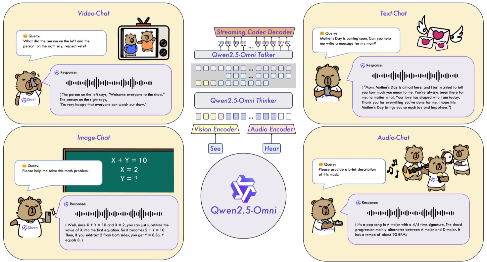

Week 6: 멀티모달 NLP의 발전#
본 강의에서는 멀티모달 NLP의 최신 발전을 2025년 기준 최신 논문과 모델 구조를 토대로 살펴본다. 특히 “Any-to-Any” 멀티모달 모델의 개념과 최신 음성 기술, 그리고 이를 활용한 응용 실습을 다룬다.
1. “Any-to-Any” 멀티모달 모델#
“Any-to-Any” 멀티모달 모델이란 여러 종류의 입력(modalities)을 받아 다양한 형태의 출력까지 생성할 수 있는 범용 모델을 의미한다. 예를 들어 하나의 모델이 텍스트, 이미지, 음성, 비디오 등을 모두 입력으로 이해하고, 응답으로 텍스트뿐 아니라 음성이나 이미지까지 생성할 수 있다면 이를 “Any-to-Any” 멀티모달 모델이라고 한다. 2025년 현재, 이러한 범용 멀티모달 모델의 등장은 NLP 분야의 패러다임을 변화시키고 있다. 이번 섹션에서는 최신 Any-to-Any 멀티모달 모델로 언급되는 SmolVLM2, Qwen 2.5 Omni, QVQ-72B (프리뷰)와 더불어, OpenAI GPT-5, Google Gemini 2.5 Pro, Anthropic Claude 4.1까지 살펴본다. 각 모델의 아키텍처와 기능, 성능과 한계, 의의를 비교해본다.
SmolVLM2 (256M–2.2B)#
SmolVLM2는 경량 멀티모달 모델로, Hugging Face 연구팀이 개발한 소형 비전-언어 모델 시리즈의 2세대이다. 파라미터 규모는 256M, 500M, 2.2B 등 세 가지로 제공되며, 1GB 미만 VRAM으로도 구동될 정도로 효율적이다. 가장 큰 2.2B 모델조차 5.2GB VRAM만으로 동영상 이해 작업을 수행할 수 있어, 모바일이나 엣지 디바이스에서도 동작 가능한 수준을 달성했다.
아키텍처: SmolVLM2는 이미지 인코더와 텍스트 디코더로 구성된 구조를 사용한다. 구체적으로, shape-optimized SigLIP이라는 효율적인 이미지 인코더와, SmolLM2라는 경량 언어 모델 디코더로 이루어져 있다. 이는 대규모 VLM들이 사용하던 방식을 간소화한 것으로, 이미지 입력에 대한 토큰 개수를 줄이고 효율적인 토큰화 전략을 채택하여 작은 모델에서도 성능을 높인 것이 특징이다. 또한 Idefics3라는 기존 멀티모달 모델 아키텍처를 기반으로 설계되어, 이미지와 텍스트의 임베딩을 통합해 텍스트를 생성하는 구조를 갖는다. 간단히 말해 Flamingo 스타일의 비전-언어 결합(이미지 인코더 + 언어 생성기)을 한층 최적화한 형태로 볼 수 있다.
입출력 및 멀티모달 연결: SmolVLM2는 텍스트와 이미지, 복수 이미지, 비디오를 임의로 조합된 시퀀스로 입력받을 수 있다. 예를 들어 동영상은 연속된 프레임 시퀀스로 처리되며, 여러 이미지와 텍스트를 교차로 입력해 “이 둘을 비교 설명하라” 같은 질의도 가능하다. 출력은 항상 텍스트로 생성된다 (설명, 자막, 대답 등). 이미지나 영상 자체를 생성하는 기능은 지원하지 않으며, 어디까지나 시각 정보에 대한 텍스트 응답을 생성하는 VQA, 캡셔닝 등에 특화되어 있다. 멀티모달 연결 구조는, 이미지/비디오 프레임을 인코더로 임베딩한 후 텍스트 디코더가 교차 주의(cross-attention)를 통해 이를 참고하며 텍스트를 생성하는 방식이다. SmolVLM2는 공개 데이터만으로 학습되었으며, LLaVA, VideoChat 등 다수의 비전-언어 instruct 데이터 총 330만 샘플로 훈련되었다. 이러한 다중 모달 데이터셋으로 학습된 덕분에 이미지와 영상에 관한 질문에 답하거나 설명 생성 등을 수행할 수 있다.
주요 성능 및 특징: 작은 모델이지만 복잡한 멀티모달 작업에서 강건한 성능을 보인다. 예를 들어 가장 작은 256M 모델은 80억 규모의 IDEFICS-80B 모델과 비교해도 일부 벤치마크에서 더 높은 점수를 획득했고, 2.2B 모델은 2배 메모리를 쓰는 일부 최신 거대 VLM에 필적하는 성능을 냈다. 특히 MathVista, TextVQA, ScienceQA 등 시각 정보가 포함된 문제에서 1세대 SmolVLM 대비 큰 향상을 보였으며, 영상 이해 벤치마크 MLVU 등에서도 2.2B 모델이 52.1점으로 기존보다 앞선 결과를 달성했다. 한편 256M 모델은 비록 절대 성능은 낮지만 MV-Bench 32.7점을 기록하여, 파라미터 수 대비 준수한 이해력을 입증했다. 요약하면, 전략적 아키텍처 최적화와 효율적인 토큰 축소를 통해 작은 모델로도 멀티모달 성능을 극대화한 것이 SmolVLM2의 성과다. 이는 대규모 자원 없이도 멀티모달 AI를 활용할 수 있는 가능성을 열어주었다는 점에서 의의가 있다.
경량화와 범용성 측면 기여: 기존 대형 멀티모달 모델(예: Flamingo 80B, Idefics 80B 등)은 성능은 뛰어나나 수십 GB에 달하는 VRAM이 필요해 배포가 어려웠다. SmolVLM2는 이러한 한계를 깨고, 모바일 기기에서도 동작 가능한 VLM의 가능성을 보여주었다. 특히 256M 모델은 1GB 이하 메모리로 동작하면서도, 개발 시점보다 18개월 앞선 80B 모델을 능가하는 결과를 낸 점이 강조된다. 이는 경량 모델이면서도 범용적인 멀티모달 이해 능력을 갖추었음을 의미한다. 또한 정지 이미지뿐 아니라 동영상까지 처리 가능한 소형 모델을 제시함으로써, 멀티모달 모델의 응용 범위를 크게 확장했다. 예를 들어 IoT 디바이스나 로봇 등에 탑재하여 실시간 영상 분석 및 질의응답에 활용하는 등의 응용이 가능하다.
사용 예제: 아래는 HuggingFace Transformers를 이용해 공개된 SmolVLM2 모델을 불러와 이미지 기반 질의응답을 수행하는 간단한 예제 코드다 (256M/2.2B 모델 중 선택하여 활용). 이 모델은 영어로 학습되었으므로 질문도 영어로 입력하는 것이 권장된다.
# 1. 필요한 라이브러리 임포트
from transformers import AutoProcessor, AutoModelForImageTextToText
import torch
# 2. SmolVLM2 모델과 프로세서 불러오기 (예: 2.2B Instruct 모델)
model_name = "HuggingFaceTB/SmolVLM2-2.2B-Instruct"
processor = AutoProcessor.from_pretrained(model_name)
model = AutoModelForImageTextToText.from_pretrained(model_name, torch_dtype=torch.bfloat16).to("cuda")
# 3. 입력 구성: 이미지와 텍스트 질의를 멀티모달 대화 형식으로 준비
messages = [
{
"role": "user",
"content": [
{"type": "image", "path": "example.jpg"}, # 분석할 이미지
{"type": "text", "text": "What is happening in this image?"} # 이미지에 대한 질문
]
}
]
inputs = processor.apply_chat_template(messages, add_generation_prompt=True, return_tensors="pt")
inputs = inputs.to(model.device, dtype=torch.bfloat16)
# 4. 답변 생성 및 결과 출력
output_ids = model.generate(**inputs, max_new_tokens=64)
answer = processor.batch_decode(output_ids, skip_special_tokens=True)[0]
print(answer)
위 코드에서는 AutoProcessor를 통해 이미지와 텍스트를 동시에 처리할 수 있는 프로세서를 불러오고, AutoModelForImageTextToText로 모델을 로드한다. 그런 다음 이미지와 질문을 content 시퀀스로 구성하여 모델에 입력하고, model.generate()로 텍스트 답변을 생성한다. 이처럼 SmolVLM2를 활용하면 주어진 이미지(또는 영상 프레임)에 대한 묘사, 질문 응답, 비교 등 다양한 멀티모달 질의응답을 경량 환경에서도 실행할 수 있다.
Qwen 2.5 Omni#
Qwen 2.5 Omni는 알리바바 클라우드의 Qwen 팀이 개발한 엔드투엔드 멀티모달 AI 모델로, 2025년 초 공개된 기술 보고서와 블로그에 상세 내용이 소개되었다. 파라미터 7B 규모의 기반 언어모델(Qwen-7B)을 중심으로, 텍스트, 이미지, 음성, 비디오의 네 가지 모달 입력을 동시에 처리하며, 텍스트와 자연스러운 음성을 동시에 스트리밍 출력할 수 있는 것이 가장 큰 특징이다. 이름의 “Omni”가 의미하듯, 사실상 “보며(See), 듣고(Hear), 말하고(Talk), 쓰는(Write)” 모든 일을 하나로 수행하는 범용 모델이다.
아키텍처 (Thinker–Talker): Qwen2.5 Omni는 Thinker–Talker라 불리는 이원화 아키텍처를 채택했다. Thinker는 사람의 두뇌 역할을 하며, 거대 언어모델(LLM)로서 모든 모달 입력을 처리하고 텍스트 응답을 생성한다. Talker는 화자에 해당하며, Thinker의 숨겨진 표현(hidden representation)을 받아 동시에 음성 오디오 토큰을 생성하는 듀얼 트랙(decode dual-track) Transformer 디코더다. 간단히 말해, 하나의 거대 LM을 두 가지 출력 스트림(텍스트와 오디오)으로 확장한 구조다. 두 모듈은 엔드투엔드로 공동 훈련되고 추론 시 동시 동작하며, 상호 간 간섭이 없도록 특별한 설계를 도입했다. 이 구성 덕분에 모델은 문장을 생성하면서 동시에 해당 문장의 음성도 바로 합성할 수 있다.
스트리밍 멀티모달 입력 처리: Qwen2.5 Omni는 스트리밍 입력을 염두에 두고 설계되었다. 음성과 비디오 입력은 잘게 청크 단위로 블록 처리(block-wise processing) 하여 순차적으로 Thinker에 공급된다. 특히 TMRoPE (Time-aligned Multimodal Rotary Positional Embedding)라는 시간 동기형 위치 부호화 기법을 제안하여, 비디오 프레임과 음성 청크를 시간축에 따라 교차 interleaving된 시퀀스로 결합하면서도 서로의 위치 정보를 어긋나지 않게 맞추었다. 예를 들어 5초 분량의 영상과 음성이 있으면, 0.5초 단위로 번갈아가며 한 시퀀스로 결합하되 RoPE 기반 위치 임베딩으로 시간 정렬을 유지하는 식이다. 이를 통해 실시간 멀티모달 대화에서도 음성과 영상 흐름을 동시에 이해할 수 있다. 텍스트 입력도 같은 시퀀스에 포함되고, 정적 이미지의 경우 고정 길이 비전 인코더 출력을 시퀀스 앞부분에 삽입하는 형태로 처리된다. 모델 내부에는 Vision Encoder와 Audio Encoder가 결합되어 있어 각각 이미지 픽셀과 음성 신호를 잠재표현으로 변환한 뒤, Thinker로 들어가는 통합 토큰 시퀀스를 구성한다.
 Qwen2.5-Omni의 개략적 구조: Vision Encoder와 Audio Encoder로 보는 입력과 듣는 입력을 임베딩하여 Thinker (LLM)에 전달하고, Thinker가 텍스트 응답을 생성함과 동시에 Talker 모듈이 Thinker의 표현을 이용해 오디오 응답(음성)을 실시간 생성한다. 이를 통해 텍스트, 이미지, 음성, 비디오 입력에 대해 동시다발적으로 읽고, 생각하고, 말하는 것이 가능해진다.
출력 및 멀티모달 연결: 이 모델의 출력은 독특하게도 텍스트와 음성 두 가지다. 예컨대 사용자가 음성으로 질문하고 이미지도 함께 제공하면, 모델은 Thinker가 텍스트 답변을 생성함과 동시에 Talker를 통해 그 답변을 음성으로 읽어준다. 특히 스트리밍 출력이 가능해서, 한 문장의 텍스트를 몇 글자 생성하면 바로 그 부분의 음성도 생성하는 식으로 지연 없이 실시간 대화를 구현했다. 멀티모달 모드 전환은 자연스럽게 모델이 알아서 수행하며, 한 시퀀스 안에서
주요 성능: Qwen2.5 Omni는 동일 크기의 단일 모달 모델들을 능가하는 전방위 성능을 보였다. 예를 들어 같은 7B 모델 크기의 Qwen2-Audio (음성 전용 모델)보다 음성 인식 및 이해 벤치마크에서 더 높은 점수를 기록했고, Qwen2.5-VL-7B (비전-언어 모델)과도 거의 대등한 시각 이해 성능을 냈다. 이는 멀티모달 통합 학습이 개별 학습 대비 정보 시너지를 냈음을 의미한다. 또한 텍스트 입력 대비 음성 입력 시의 성능 하락폭이 거의 없어, 예를 들어 MMLU, GSM8K 같은 학술 벤치마크에서 음성 질의 응답 성능이 텍스트 질의 때와 동등한 수준임이 보고되었다. 이는 사용자가 음성으로 질문해도 GPT-4 수준의 지식 응답을 얻을 수 있음을 시사한다. 한편 멀티모달 종합 평가 지표인 Omni-Bench 등에서 동일 파라미터 급 최고 성능을 달성하여, 2025년 기준 가장 뛰어난 공개 멀티모달 챗봇 중 하나로 평가된다. 음성 출력 품질도 뛰어나서, 스트리밍 TTS 기준으로 대부분의 기존 스트리밍/비스트리밍 TTS를 능가하는 자연스러움과 안정성을 보였다. 즉, Talker를 통해 생성된 음성이 잡음이나 뭉개짐 없이 사람처럼 유창했고, 문장 중간중간 끊기지 않는 연속 합성이 가능했다는 뜻이다.
기여점: Qwen2.5 Omni의 등장은 진정한 의미의 통합 멀티모달 AI의 가능성을 열었다는 평가를 받는다. 이전까지는 이미지+텍스트 모델, 음성+텍스트 모델 등이 개별적으로 존재했지만, 단일 모델에 모든 입력/출력 모달이 통합된 것은 이 분야의 중요한 이정표다. 특히 Thinker–Talker 구조는 텍스트 생성과 음성 생성을 한 흐름에서 동시에 처리하는 새로운 접근으로, 멀티모달 대화 시스템의 응답 지연 문제를 크게 개선했다. 추가로, Qwen2.5 Omni는 경량화 및 실용화에도 신경 써서, 모델 가중치를 4-bit 양자화(AWQ) 하고 모듈별 로드/오프로드를 통해 VRAM 사용을 절반 이하로 감소시키는 최적화도 함께 공개했다. 그 결과 RTX 3080(10GB) 급 GPU에서도 이 거대 멀티모달 모델을 실행할 수 있게 되어, 연구 목적으로뿐만 아니라 실제 응용 서비스에도 투입 가능한 수준으로 접근했다.
사용 예시 및 오픈소스: Qwen2.5 Omni의 모델과 훈련 코드는 알리바바의 깃허브(QwenLM)에 공개되어 있으며, Hugging Face에도 4bit 양자화 중간가중치로 제공되어 있다. 다만 모델 구조가 복잡하여 Transformers 라이브러리의 확장 버전을 설치하고, 제공된 qwen-omni-utils 툴킷을 이용해 입력을 처리해야 한다. 제공되는 예제 스크립트를 통해 마이크 입력 음성을 실시간 인식하고, 텍스트와 음성 답변을 스트리밍 출력하는 데모를 실행할 수 있다. 예를 들어, low_VRAM_demo_awq.py 스크립트를 구동하면 카메라 영상 + 마이크 음성을 입력받아, 화면에 텍스트 답변과 함께 스피커로 음성 출력까지 수행하는 채팅을 경험할 수 있다. 이러한 공개 데모를 통해 영상통화처럼 상대와 대화하거나, 음악을 들려주면 모델이 음악 특징을 설명하는 등 흥미로운 활용 사례들이 확인되고 있다. (Qwen2.5 Omni는 중국어와 영어 데이터를 주로 학습하여 이 두 언어를 유창하게 지원하며, 그 외 언어는 제한적이다.)
QVQ-72B (프리뷰 → QVQ-Max)#
QVQ-72B는 알리바바 Qwen 팀이 2024년 말 프리뷰 버전으로 공개한 초거대 비주얼 추론(multimodal reasoning) 모델이다. 이름에서 드러나듯 파라미터 수 약 720억 개(72B) 규모이며, Qwen 시리즈 중 Qwen2-VL-72B (72B 비전-언어 모델)을 기반으로 시각추론 능력을 대폭 강화한 실험적 모델이다. 사람처럼 이미지를 보고 복잡한 문제를 단계별로 푸는 능력을 목표로 개발되었다고 소개되었다. 2024년 12월에 가중치가 공개(downloadable open-weight)되어, 일반 연구자들도 다운로드 받아 사용할 수 있는 최초의 초거대 비주얼 추론 모델로 주목받았다.
아키텍처 및 멀티모달 연결: QVQ-72B는 Qwen2-VL-72B-Instruct라는 기존 거대 모델을 기반으로 파인튜닝되었다. 기본 구조는 텍스트 생성형 Transformer LM으로, 여기에 이미지 입력을 위한 비전 인코더가 접합된 형태다. 비전 인코더는 CLIP 계열의 ViT 대형 모델을 사용하며, 출력된 이미지 임베딩을 텍스트 토큰 시퀀스에 삽입하여 언어모델이 이를 처리하도록 한다. 한편 QVQ는 “Think with evidence”, 즉 근거와 함께 생각하기를 강조한 훈련 전략을 취했다. 복잡한 시각 문제를 풀 때 Chain-of-Thought(연쇄 추론) 방식으로 단계별 해설을 생성하도록 파인튜닝되어, 답을 곧바로 내기보다 중간 사고 과정을 텍스트로 풀어내는 경향이 있다. 이를 통해 다단계 추론 문제가 많은 수학/과학 영역에서 성능 향상을 노렸다. 프리뷰 버전에서는 이 과정에서 나타나는 몇 가지 한계(예: 자기 반복 또는 이미지 정보 망각)가 지적되었으나, 근본 아이디어는 향후 멀티모달 CoT의 토대를 보여주었다. 입력으로는 이미지 한 장 또는 여러 장 + 텍스트를 함께 넣을 수 있고, 출력은 문자열 형태의 답변 및 설명이다. 예컨대 “다음 물리 문제를 보고 해결 과정을 설명하라”라고 하면, 이미지를 인식하고 단계별 풀이과정과 최종 답을 한꺼번에 생성하는 식이다.
주요 성능: QVQ-72B (프리뷰)는 시각적 추론 능력에서 이전 모델들을 크게 능가하는 성과를 보였다. 대학 수준의 종합 멀티모달 시험인 MMMU 벤치마크에서 70.3점을 기록했는데, 이는 동일한 72B 크기의 기존 모델(Qwen2-VL-72B-Instruct)의 64.5점보다 크게 향상된 것이며, 일부 문항에서는 OpenAI의 비공개 모델(OpenAI o1) 성능에 근접하는 결과였다. 특히 수학 그래프, 수식 등 시각+논리 복합 문제(MathVista 등)에서 전세대 대비 5~10점 이상 향상되었고, MathVision, OlympiadBench (과학 올림피아드 문제)처럼 고난도 문제셋에서도 좋은 성능으로 SOTA 격차를 줄였다. 예를 들어 OlympiadBench에서 Qwen2-VL이 11.2점에 그쳤던 것이, QVQ-72B는 20.4점으로 배 가까이 상승해 OpenAI o1 (25.9점)에 근접했다. 이러한 향상은 이미지를 활용한 복잡 문제 해결에 특화된 훈련의 효과를 입증한다. 요컨대 QVQ는 이미지를 통해 세상을 보고 (See), 언어를 통해 숙고하며 (Think), 결론을 언어로 제시한다 (Answer)는 모토 아래, AI의 시각적 추론력을 한 단계 끌어올린 모델로 평가된다.
업데이트: QVQ-Max 출시 – 2025년 3월에는 QVQ-72B 프리뷰의 후속 버전인 QVQ-Max가 공식 출시되었다. QVQ-Max는 전작의 한계를 보완하여, 여러 이미지 동시 분석, 영상 클립 이해, 향상된 단계별 추론 등을 지원한다. 예를 들어 여러 장의 이미지를 비교 분석하거나, 동영상 속 장면을 연속적으로 해석해 질문에 답하는 데에도 활용될 수 있다. QVQ-Max는 프리뷰 대비 정확도와 기능면에서 개선되었으며, 이를 통해 Qwen 팀은 “이미 보고 생각하는(Think with evidence)” AI의 가능성을 현실에 가깝게 보여주었다. MMMU, MathVision 등 고난도 멀티모달 문제에서 QVQ-Max는 이전 프리뷰보다 높은 정확도를 달성했고, 시연 결과 여러 이미지를 단계별로 추론하는 투명한 “생각하기” 과정도 공개되었다. 아직 첫 버전이지만, 향후 시각 CoT 추론의 실용화를 향한 초석을 놓았다는 평가를 받고 있다. (참고로, 2025년 하반기에는 Qwen 시리즈의 차세대인 Qwen3-Max가 1조 파라미터 규모로 등장했으며, 이는 멀티모달 AI의 경계를 더욱 확장한 사례다. 다만 본 강의 범위에서는 Qwen2.5 세대까지 다룬다.)
한계와 향후 개선: 프리뷰 단계의 QVQ-72B에는 몇 가지 한계가 보고되었다. 언어 혼용 이슈로 간혹 답변 중 언어를 뒤섞거나 (예: 영어 답변 중 중국어 문장이 삽입되는 등), 재귀적 추론에서 맴돌아 결론을 못 내고 장황하게 반복하는 경우가 있다는 것이다. 또한 안전성 미비나, 다단계 추론 중 점차 이미지 맥락을 잊고 헛소리할 수 있다는 점도 지적되었다. 팀은 이러한 문제들을 개선한 QVQ-Max 버전을 공개하며 상당 부분 해소했다고 밝혔다. 그럼에도 불구하고 QVQ-72B 프리뷰의 의의는 크다. 초거대 멀티모달 모델을 공개함으로써 연구자들이 직접 실험해볼 수 있게 했고, 이미지+텍스트+추론을 결합한 새로운 벤치마크와 평가 방법을 제시했다는 점에서다. 예를 들어 QVQ가 고득점을 올린 MMMU, MathVista 등의 데이터셋은 시각적 사고력을 평가하는 새로운 표준이 되어, 이후 다른 모델들의 목표가 되고 있다.
모델 사용 및 응용: QVQ-72B는 모델 크기가 매우 크기 때문에 일반 GPU 환경에서 직접 다루긴 어렵지만, Hugging Face에 Preview 가중치가 올라와 있어 (승인 후) 다운로드는 가능하다. 또 Qwen.ai의 데모를 통해 간단한 이미지를 올리고 질문하는 온라인 테스트를 체험할 수 있다. 응용 측면에서, QVQ 같은 모델은 과학 문제 풀이, 데이터 시각화 해석, 도형 추론 등 인간이 그림과 언어를 함께 사용해야 하는 작업에 투입될 수 있다. 예를 들어 논문 그림을 이해해서 설명하거나, 복잡한 수식 그래프를 읽고 의미를 풀어주는 등 전문 지식 분야에서 활용 가능성이 높다. 아직 프리뷰 단계에서는 모델 출력을 신뢰하기 어려운 면이 있지만, QVQ-Max 등 개선 버전의 등장을 통해 이러한 고차원 시각+언어 추론 에이전트가 점차 현실화되고 있다.
OpenAI GPT-5#
GPT-5는 OpenAI가 2025년 8월 발표한 차세대 멀티모달 거대 언어모델(LLM)이다. GPT-4 이후 약 1년 반 만에 등장한 이 모델은 이전 세대 대비 모든 측면에서 비약적 향상을 이루었다고 평가된다. GPT-5는 코딩, 수학, 글쓰기, 시각 이해, 의료 자문 등 다양한 분야에서 SOTA 성능을 보이며, OpenAI 내부 평가에서 사람 수준 또는 그 이상의 작업 수행 능력을 보였다고 한다. 특히 GPT-5의 가장 큰 변화는 “생각하는 능력(thinking)”을 내재화한 통합 시스템이라는 점이다.
아키텍처 (Unified Thinking System): GPT-5는 한마디로 한 개의 모델이 아닌, 하나로 통합된 시스템이다. 내부적으로는 두 단계의 모델(빠른 응답용 경량 모델 + 심층 추론용 모델)과 실시간 라우터를 조합한 구조로 알려져 있다. 기본적으로 간단한 질문에는 즉각 답변하는 경량 모델이 응답하고, 난이도 높은 문제나 “심사숙고해 달라”는 요청이 있으면 고도화된 추론 모드(GPT-5 Thinking)로 전환하여 더 깊이 계산한다. 이러한 구조는 사용자의 질의에 따라 동적으로 모델을 선택함으로써, 일상 대화에는 빠르고 저비용으로 응답하고 복잡한 문제에는 충분한 연산을 투입하는 효율을 달성했다. OpenAI는 이를 위해 대형 언어모델과 소형 모델을 하나의 제품으로 합치는 기술을 개발했고, 사용자들의 피드백(모델 전환 빈도, 답변 선호도 등)을 라우터 훈련에 반영하여 점차 최적화했다고 한다. GPT-5 Pro 버전의 경우 이러한 심층 추론 모드의 사용량이 더 많게 허용되어, 더욱 정확하고 포괄적인 답변을 내놓을 수 있다.
멀티모달 입력과 이해: GPT-5는 텍스트 이외의 입력(비정형 데이터)에 대한 이해력이 GPT-4보다 크게 향상되었다. 이미 GPT-4가 이미지 해석 능력을 일부 갖추고 있었지만, GPT-5는 이미지, 도표, 차트, 심지어 짧은 영상 클립까지 분석하여 거기서 추론을 수행할 수 있다. 예를 들어 차트 이미지를 주고 요약을 요청하면 GPT-4보다 정확히 읽어내고 설명하며, 프레젠테이션 슬라이드 사진을 입력하면 내용을 요약하거나 질문에 답하는 능력이 개선되었다. 공간적 추론(예: 도형 문제)이나 물리 영상 이해에서도 GPT-4 대비 강점을 보여, MMMU 등 멀티모달 종합 벤치마크에서 84.2%의 높은 점수를 기록했다. 다만 GPT-5 자체는 출력 모달리티는 텍스트에 머물러 있다. (OpenAI의 음성 출력 기능은 별도의 TTS 엔진을 통해 제공되며, 이미지 생성은 DALL-E 등 도구로 수행된다.) 그러나 GPT-5는 이미지 입력에 대한 추론 정확도를 크게 높이고, 영상 기반 질의에서도 연속 프레임 속 의미를 파악하는 능력을 갖춤으로써, 비언어적 정보를 통합하여 답변하는 지능에 한 걸음 다가섰다.
향상된 추론 및 정밀도: GPT-5는 GPT-4 대비 추론 사슬(chain-of-thought) 활용 능력이 강화되었다. GPT-4도 CoT 프롬프트를 주면 단계별로 생각할 수 있었지만, GPT-5는 별도 프롬프트 없이도 복잡한 문제에서 자동으로 내부 “생각 모드”를 발동하여 다중 단계를 거쳐 더 정확한 답을 찾는다고 한다. 그 결과 수학, 논리, 과학 분야 문제에서 GPT-4를 크게 앞지르는 성과를 보였다. 예를 들어 GPQA (General Problem-solving & Question Answering) 벤치마크에서 88.4%로 새로운 SOTA를 기록했고, AIME 2025 의학시험에서도 툴 없이 18.8%의 정답률을 보여 기존 기록을 경신했다. 또한 GPT-5는 사실 검증과 성찰 능력이 향상되어, 환각(hallucination) 발생률이 GPT-4 대비 절반 이하로 떨어졌고, 자신이 모르는 내용은 솔직히 인정하는 빈도가 높아졌다. 특히 시각 정보 기반 질문에 대해 거짓 추측을 남발하는 문제가 개선되어, CharXiv라는 이미지-텍스트 결합 벤치마크에서 GPT-4(o3)가 없는 이미지를 멋대로 해석한 비율이 86.7%였던 반면 GPT-5는 9%에 불과했다. 이런 개선은 GPT-5가 “모르면 모른다”고 답할 줄 아는 정직함과 신뢰성 면에서 진일보했음을 보여준다.
주요 성능 및 특징: GPT-5는 출시 시점 기준 전 분야에서 최고 수준의 성능을 선보였다. 코딩 능력에서는 GPT-4 대비 큰 향상을 보였는데, 프론트엔드 웹페이지 생성이나 대규모 코드베이스 디버깅 등에서 뛰어난 결과를 낸다. 하나의 프롬프트로 완성형 웹앱을 만들어내거나, UI 디자인 감각까지 반영한 코드를 생성하는 예시가 공개되기도 했다. 글쓰기 측면에서도 GPT-4보다 더 창의적이고 문학적인 글을 생성할 수 있으며, 시나 에세이 등에서 일관된 문체를 유지하는 능력이 향상되었다. 전문 영역으로는 의료 질의 응답에서 GPT-4를 능가하는 HealthBench 점수를 기록하여, 사용자에게 의료 정보를 제공할 때 더 정확하고 사려 깊은 답변을 한다. 이러한 향상된 실력에도 불구하고, OpenAI는 GPT-5를 누구나 사용할 수 있도록 ChatGPT 인터페이스에 통합하고 Plus 이용자에게 제공하기 시작했다. Plus 사용자는 GPT-5 모델을 기본으로 쓰되, 제한된 사용량 내에서 GPT-5 Pro 모드(심층 추론)를 활용할 수 있다. 정리하면, GPT-5는 응답 속도와 깊이를 상황에 따라 조절하고, 더 다양한 입력을 이해하며, 사실성 높은 답변을 생성하는 현시점 최강의 LLM으로 자리매김했다.
기여점 및 한계: GPT-5는 LLM의 새로운 경지를 열었지만, 동시에 모델 복잡도 증가로 인한 과제가 있다. 여러 하위모델과 라우터를 통합한 시스템이기 때문에 개발 및 유지보수에 많은 노력이 필요하며, 일반 개발자가 동일한 접근을 모방하기는 어렵다. 또한 GPT-5는 여전히 비전-언어-음성 모든 출력을 단일 모델에서 생성하는 단계까지는 나아가지 못했다. 예를 들어 Qwen2.5 Omni처럼 음성을 직접 출력하지는 못하고, 이미지 생성도 통합되지 않았다. 이는 OpenAI가 모델의 안전성과 전문성을 위해 모듈화를 선택한 결과로 보이며, 추후 GPT-6 등에서 통합이 이뤄질지 주목되고 있다. 그럼에도 GPT-5의 멀티모달 이해, 체인-of-Thought 추론, 사실성 개선 기여는 거대 모델의 실용성 향상에 크게 이바지했다. 실제로 GPT-5 발표 후 여러 산업 현장에서 전문가 수준의 업무 자동화 사례가 보고되었고, AI가 인간 수준으로 다양한 업무를 수행하는 시대가 성큼 다가왔음을 보여주었다.
Google Gemini 2.5 Pro#
Gemini 2.5 Pro는 Google DeepMind가 2025년 3월 공개한 차세대 멀티모달 AI 모델로, GPT-4를 능가하는 종합 지능으로 화제가 되었다. Gemini는 원래 2024년에 발표된 멀티모달 모델로, 2025년에 2.5 버전이 큰 업그레이드와 함께 출시되었다. Native Multimodality(태생적 멀티모달 지원)와 1백만 토큰(context) 길이의 맥락 처리, 그리고 고도화된 추론(Thinking) 능력이 특징이다. 이름에서도 알 수 있듯 Gemini(쌍둥이 자리)는 두 가지 요소 – 기본 언어모델과 추론 능력 – 를 결합한 모델군이며, 2.5 Pro는 그 중 가장 강력한 버전이다.
아키텍처와 “생각하기” 내재화: Google에 따르면, Gemini 2.5는 생각하는 모델(thinking model)로 분류된다. 이는 모델이 질문에 답하기 전에 내부적으로 스스로 사고 과정을 전개하여 더 정확한 결과를 낸다는 의미이다. 이러한 기능은 “Flash Thinking”이라 불리는 기술로 구현되었으며, 2.0 버전에서 도입된 것을 2.5에서 한층 개선했다. 구체적인 아키텍처는 공개되지 않았으나, 추론을 위한 추가 토큰 발행이나 자체적인 연산 예산 할당 등의 방법으로 과제 난이도에 따라 가변적으로 연산하는 것으로 알려져 있다. 또한 초대용량 컨텍스트 (최대 100만 토큰)를 지원하여, 긴 문서나 복잡한 데이터셋도 한꺼번에 모델에 투입해 종합적인 분석을 할 수 있다. 예를 들어 수백 페이지 분량의 보고서와 그에 관련된 이미지, 표 등을 한 번에 넣고 질의를 하면, Gemini 2.5가 이를 모두 참고하여 답변을 생성할 수 있다. 이러한 거대 컨텍스트 + 자가추론 조합은 현재 다른 어떤 모델에서도 유례가 없는 Gemini만의 강점이다.
입력 및 멀티모달 처리: Gemini 2.5는 텍스트, 이미지, 오디오(음성), 비디오, 코드 등 다양한 입력을 네이티브로 이해할 수 있도록 설계되었다. “네이티브”란 별도 툴 없이 모델 자체가 이들 정보를 처리함을 의미한다. 실제로 Gemini 2.5는 음성 인식 정확도가 Whisper보다 개선되었고, 이미지 이해 능력도 향상되었다고 개발팀이 밝혔다. 사용자 입장에서는, 마치 인간과 대화하듯 말로 질문하거나 이미지를 보여주는 것만으로 상호작용할 수 있는 것이다. 예를 들어 “(음성) 이 사진에 나온 새는 어떤 종류야?”라고 물으면, Gemini가 음성을 텍스트로 변환하고 이미지를 분석하여 새의 종을 답하는 식이다. 이러한 과정이 모두 엔드투엔드 모델 내부에서 이뤄지므로, 응답 속도와 정확도가 뛰어나다. 출력 모달리티는 기본적으로 텍스트이지만, Google은 Gemini와 Imagen 등 생성 모델을 연계하여 이미지 생성 응답도 가능하게 하는 플래시(Image) 기능을 시범 제공했다. 이를 통해 Gemini에 “장면을 설명하는 그림을 그려줘”라고 하면, 내부적으로 Gemini가 요청을 이해하고 Imagen을 통해 이미지를 생성하여 결과를 반환할 수도 있다. (이 기능은 Vertex AI의 Flash Image Preview로 제한적으로 공개되었다.) 아직 음성 출력은 기본 제공되지 않지만, Google 어시스턴트 등에 Gemini를 통합하여 TTS 엔진과 연결하면 텍스트↔음성 대화도 가능한다. 요약하면, Gemini 2.5는 입력 단계에서의 Any-to-Any를 거의 실현한 모델이라 할 수 있다.
주요 성능: Gemini 2.5 Pro는 등장과 함께 여러 벤치마크 1위를席 휩쓸었다. 인간 선호도 기반 종합 평가인 LMArena에서 GPT-4 등을 큰 차이로 제치고 1위를 기록했고, 수학 및 과학 문제(AIME 2025 등)에서도 사전 투표(majority voting) 없이 SOTA 점수를 달성했다. 또한 Humanity’s Last Exam이라는 어려운 지식 시험에서 18.8%의 점수를 얻어 (툴 미사용 모델 기준) 1위를 차지했다. 코딩 성능도 2.0 대비 비약적으로 향상되어, 대표적인 에이전트 코딩 평가인 SWE-Bench Verified에서 63.8%를 기록했다. 이는 OpenAI GPT-4.5나 Anthropic Claude 3.7 등 동시기 모델들을 앞서는 결과이다. 전반적으로, Gemini 2.5는 이종 정보원을 통합해 복잡한 문제를 푸는 능력에서 탁월하며, 코드, 추론, 과학 영역에 강점이 있다. Google은 Gemini 2.5가 “고품질 스타일의 응답”을 생성한다고 강조했는데, 이는 단순히 정답을 맞추는 것뿐 아니라 문장 표현력과 세련됨 면에서도 뛰어나다는 의미이다. 실제 사용자 평에서도 GPT-4 대비 Gemini 응답의 문체나 설명 친절도를 높게 평가하는 경우가 많았다.
의의 및 접근성: Gemini 2.5는 Google이 오랜 기간 축적한 멀티모달 기술 (예: 이미지 모델, 음성 모델, 번역 등)을 총망라하여 융합한 결정체라 할 수 있다. 이 모델은 1M 토큰 컨텍스트와 다중 모달 입력을 모두 처리함으로써, AI가 거대한 지식베이스 + 복잡한 환경을 한꺼번에 고려하여 행동하는 기반을 마련했다. 예를 들어, 수백 페이지 문서를 읽으며 동시에 관련 그림과 도표까지 분석하여 질의응답을 하는 등, 장기간 맥락 이해와 시각정보 결합이 요구되는 작업을 하나의 모델로 수행할 수 있게 된 것이다. 이는 향후 전문 도메인(법률 문서 검토, 연구 논문 분석 등)이나 대화형 에이전트(사용자 길잡이 AI) 개발에 큰 혁신을 불러올 것으로 기대된다. Google은 Gemini 2.5 Pro를 Vertex AI 플랫폼을 통해 API로 제공하고 있으며, Google AI Studio 및 Gemini 앱(gemini.google.com)에서 개발자와 사용자가 직접 시험해볼 수 있도록 했다. 가격 정책도 공개하여 기업들이 확장성 있게 쓸 수 있게 준비 중이다. 다만 Gemini 2.5 자체의 모델 가중치는 공개되지 않았고, 구체적인 파라미터 수나 훈련 데이터 등은 기밀로 남아 있다. 그럼에도 Gemini 2.5의 공개는 개방형 생태계에도 자극을 주어, 거대 LLM들의 경쟁 구도가 멀티모달+초장문+고차원 추론 방향으로 급속히 진화하는 계기가 되었다.
Anthropic Claude 4.1#
Claude 4는 Anthropic사가 2025년 중반 발표한 최신 세대 LLM으로, 특히 코딩 및 에이전트(Agentic) 작업에서 탁월한 성능을 보여주었다. Claude 4는 내부적으로 두 가지 모델로 구성되어 제공되며: Claude Opus 4와 Claude Sonnet 4가 그것이다. Opus 4는 고성능 모드, Sonnet 4는 경량/고속 모드로서, OpenAI의 GPT-5와 유사하게 빠른 응답과 심층 추론을 분리한 구조를 채택했다. Claude 4.1은 2025년 8월에 출시된 Opus 4의 마이너 업그레이드 버전으로, 멀티파일 코딩, 에이전트 추론, 상세 검색 능력 등이 향상되었다.
모델 구성과 “Extended Thinking”: Claude 4 계열은 하이브리드(hybrid) 모델로 불린다. 이는 사용자의 요청에 따라 즉시 응답 모드와 확장 사고 모드(extended thinking)를 오가며 최적의 결과를 내는 접근법이다. Claude Opus 4는 수 시간에 걸친 연속 작업도 끊기지 않고 진행할 정도로 설계되어 있어, 수천 단계가 필요한 문제도 지속적으로 풀어낼 수 있다. 예컨대 Opus 4는 독립적으로 7시간 넘게 코드 리팩토링을 수행하며 꾸준한 성능을 유지했다는 보고가 있다. 이를 가능케 한 핵심은 확장된 맥락 메모리 및 툴 사용이다. Claude 4 모델들은 100K 토큰 이상의 맥락을 다룰 수 있고 (Claude 2에서도 이미 100K), 개발자가 파일 액세스를 허용하면 로컬 메모리 파일을 생성하여 필요한 정보를 저장/참조하기도 한다. 또한 도구 사용 능력이 크게 강화되어, 웹 검색이나 코드 실행 등의 툴을 병렬로 사용할 수 있고, 멀티스텝 작업에서도 스스로 계획을 세워 실행한다. Anthropic은 이를 위해 “사고 요약(thinking summary)” 기능을 도입했는데, 추론 단계가 너무 길어질 경우 작은 모델이 중간 생각을 요약하도록 한 것이다. 이러한 장치를 통해 Claude 4는 대부분의 문제에서 자체 추론을 충분히 보여주되, 필요한 경우만 요약하여 효율을 챙긴다. 정리하면, Claude 4는 LLM의 장기 추론 안정성 문제를 기술적으로 해결하며 대규모 멀티스텝 작업에 적합하도록 진화한 모델이다.
에이전트 및 코딩 특화: Claude 4 발표 시 강조된 점은 코딩 분야 최고 성능이었다. 특히 Opus 4는 SWE-Bench (대규모 소프트웨어 엔지니어링 과제)에서 72.5%로 1위를 기록했고, Terminal-Bench(터미널 내 작업 수행)에서도 43.2%로 선두였다. 이는 GPT-4 등의 점수를 상회하는 결과이다. Claude는 복잡한 멀티파일 코드 수정, 리팩토링에 강하며, 버그 최소화한 정확한 수정을 해낸다는 개발자 피드백이 있다. Sonnet 4 역시 소형 모델임에도 SWE-Bench 72.7%로 뛰어난 편이라, GitHub는 이를 차세대 Copilot 에이전트에 활용한다고 밝혔다. 또한 Agentic task – 예를 들어 외부 툴을 사용해 목표 달성 – 측면에서도 Claude 4는 탁월하다. Anthropic은 Claude 4 출시와 함께 웹 브라우저, 파일 편집 등의 툴을 API로 제공했고, Claude가 이를 병렬로 사용하며 복잡한 문제를 해결하는 데 성공했다. 한 예로, Claude 4는 주어진 규칙에 따라 웹에서 정보를 찾아오고, 로컬 파일에 기록하며, 필요한 경우 터미널 명령을 실행하는 등 하나의 시나리오에서 여러 도구를 활용해 자율적으로 업무를 처리했다. 이러한 능력은 기업용 AI 비서나 자동화 에이전트 개발에 즉시 적용되었고, MS Copilot Studio 등에서도 Claude 4를 통합하여 다양한 워크플로우에 쓰고 있다.
멀티모달 요소: Anthropic Claude 4는 주로 텍스트 기반 모델로 출시되었지만, 내부 평가에서 MMMLU, MMMU 같은 멀티모달 학습 지표도 포함되었다. 이는 Claude가 툴을 통해 이미지 등을 처리할 수 있음을 시사한다. 실제 Claude 4 Extended Thinking 모드에서는 이미지 캡셔닝 모델이나 OCR을 연계하여, 도표 이해나 이미지 속 텍스트 추출 등의 기능을 수행했다고 전해진다. 예컨대, Claude 4에게 “첨부한 차트를 분석해줘”라고 하면, Claude가 사전에 주어진 이미지 설명 API를 호출해 내용을 얻고, 그 텍스트를 기반으로 추론하는 방식이다. 이러한 모듈형 멀티모달 처리는 GPT-4 Plugin 시스템과 유사한 접근으로, Claude 자체가 이미지 벡터를 이해하지는 못해도 외부 도구와 협력하여 시각 정보를 활용할 수 있게 한다. 따라서 Claude 4는 Qwen이나 GPT-5처럼 네이티브 멀티모달 통합은 아니지만, 실용적 관점에서 멀티모달 문제 해결을 지원하고 있다고 볼 수 있다. 향후 Anthropic이 자체 Vision 모델과 결합한 버전을 내놓을지는 공개되지 않았으나, 2025년 말까지는 Claude는 텍스트 및 코드에 주력하는 모양새이다.
주요 성능: Claude 4.1 (Opus 4.1 기준)은 코딩 정확도 74.5% (SWE-Bench)까지 끌어올리며 업계를 선도했고, 상황 추적 및 세부 검색 능력도 강화되었다. 특히 대용량 코드베이스에서 필요한 부분만 수정하고 불필요한 변경을 하지 않는 정밀함을 보여줘, 대기업 개발팀들이 실무 디버깅에 선호한다는 피드백이 있었다. 또한 복잡한 데이터 분석 측면에서도, 주어진 문서나 테이블에서 핵심을 빠짐없이 찾아내는 디테일 추적(detail tracking) 능력이 향상되었다. Anthropic 내부 벤치마크에 따르면, Claude 4.1은 Claude 3.7 대비 종합 능력이 크게 향상되었고, 특히 멀티스텝 추론에서 지름길을 찾는 부정행위가 65% 줄어들었다고 한다. 이는 모델이 문제를 성실히 풀지 않고 편법으로 답을 구성하는 경향을 억제했다는 것으로, 사용자가 신뢰할 수 있는 솔루션을 제공하는데 기여한다. Claude 4는 모델 일관성 및 안전성 면에서도 진전을 보여, Anthropic이 설정한 헌팅tin값(유해발언 억제 등)에서 높은 준수율을 보이고 있다. 다만, Claude 4.1도 GPT-5나 Gemini 2.5에 비해 학습 데이터의 한계로 인한 지식 격차는 존재하며, 이미지나 음성 정보를 직접 다루는 면에서는 제한적이다. 그러나 100k+ 맥락 장기기억, 뛰어난 도구 연계, 고품질 코드 출력 등 강점을 통해 엔터프라이즈 용도에서 각광받고 있다. 실제로 2025년 하반기 MS 365 Copilot, Xcode 등 주요 플랫폼에 Claude 4가 통합되어 업무 생산성을 높이는 사례가 늘고 있다.
접근성과 오픈성: Claude 4는 claude.ai를 통해 일반 사용자도 체험할 수 있고, API로도 제공된다. 특히 Amazon Bedrock과 Google Cloud Vertex AI에 Claude 4.1이 탑재되어, 개발자들이 손쉽게 인프라에 통합할 수 있다. 가격은 1백만 토큰당 Opus 4 \(15 입력 / \)75 출력, Sonnet 4 \(3 입력 / \)15 출력으로 책정되어 GPT-4와 비슷한 수준이다. Anthropic은 모델 가중치를 공개하지는 않았지만, 연구 파트너에게는 접근 권한을 일부 주어 협업을 진행하고 있다. 또한 책임 있는 확장(responsible scaling) 정책을 발표하여, 일정 기간마다 모델 업그레이드 시 안전 점검을 투명하게 공개하고 있다. 이러한 노력은 거대 모델을 신뢰성 있게 배포하는 모범사례로 평가받는다. 요약하면, Claude 4.1은 오픈소스와 폐쇄모델의 중간 지점에서 혁신을 지속하며, 멀티모달 AI의 실용화에 크게 공헌하고 있는 모델이다.
모델 비교 요약: 아래 표는 앞서 소개한 주요 모델들의 특성을 비교 요약한 것이다.
모델 |
파라미터 규모 |
지원 입력 모달 |
출력 모달 |
아키텍처 특징 |
주요 성능 및 기여 |
|---|---|---|---|---|---|
SmolVLM2 |
256M / 500M / 2.2B |
텍스트, 이미지, 복수 이미지, 비디오 |
텍스트 (설명/응답 생성) |
IDEFICS3 기반 경량 VLM. SigLIP 이미지인코더 + SmolLM2 디코더 (Enc-Dec 구조). 이미지 토큰수를 대폭 감축한 최적화 전략 적용 |
1GB VRAM으로 동작하는 소형 VLM. 256M 모델이 80B 모델보다 일부 성능 우위 입증, 2.2B 모델은 2배 메모리 쓰는 SOTA VLM과 대등. 영상 이해까지 확장하여 온-디바이스 멀티모달 AI 가능성 제시 |
Qwen 2.5 Omni |
~7B (텍스트 LLM 기반) |
텍스트, 이미지, 오디오(음성), 비디오 (실시간 스트리밍) |
텍스트 + 음성 (동시 출력) |
Thinker–Talker 이원화 구조. TMRoPE로 시간동기화된 멀티모달 시퀀싱. 듀얼 디코더로 텍스트·음성 동시 생성 |
최초의 텍스트+음성 동시 생성 LMM. 음성-텍스트 지식응답 성능 동등, Omni-bench 등 동일급 최고 성능. 단일모달 동급 모델보다 멀티모달 학습으로 전반적 성능 향상. 실시간 멀티모달 상호작용 구현 |
QVQ-72B (Preview) |
~72B |
텍스트 + 이미지 (다중 이미지 지원), |
텍스트 (답변 + 추론과정) |
Qwen2-VL-72B 기반 초거대 Vision-LM. 멀티모달 Chain-of-Thought 추론 특화 (단계별 사고 설명) |
공개된 최대 규모 시각추론 LM (2024). MMMU 70.3점으로 전세대 대비 크게 향상, MathVision 등 고난도 수학/과학 문제에서 SOTA 접근. 이미지로 복잡 문제 해결하는 멀티모달 추론 새 길 개척 |
OpenAI GPT-5 |
비공개 (수백~천억+ 추정) |
텍스트, 이미지(사진, 차트), 영상(프레임 기반) |
텍스트 (ChatGPT 응답) |
Unified Thinking 이원 시스템. 경량 응답 모델 + 심층 추론 모델 + 실시간 라우터 통합. 2단계 “생각” 내재화 |
GPT-4 대비 종합적 지능 향상. 멀티모달 이해 (이미지/영상) 정확도 증대, 추론시 환각 감소 및 정직성 개선. 코딩·글쓰기·의료 등 다방면 SOTA. 사용 맥락 따라 빠른 응답 vs 심층사고 조절하는 실용적 AI 구현 |
Google Gemini 2.5 Pro |
비공개 (수백억+? Mixture 설계) |
텍스트, 이미지, 오디오, 비디오, 코드 |
텍스트 (Vertex 연계로 이미지 생성 가능) |
Native Multimodality 지원 통합 LM. Flash Thinking 기법으로 내부 추론 시간 할당. 초장문 및 다양한 입력 동시 처리 |
LMArena 1위 등 GPT-4.5급 능가. AIME/GPQA SOTA, SWE-Bench 63.8%. 텍스트·음성·이미지 등 복합 정보 통합 분석 뛰어남. 100만 토큰 맥락으로 장문+멀티모달 문제 해결 능력 제시 |
Anthropic Claude 4.1 |
비공개 (수백억 이상 추정) |
텍스트 (툴 활용으로 이미지/OCR 가능) |
텍스트 (응답, 코드, agent 행위) |
Hybrid Reasoning 모델. Opus(고성능) + Sonnet(속응) 2종. Extended Thinking으로 100k+ 맥락, 툴 다중 사용 |
코딩 SOTA (SWE 74.5%) 및 장기 에이전트 작업 특화. 여러 파일 편집·디버깅 정밀 수행. 웹검색 등 병렬 툴로 복잡 과제 해결. 안정적 장기추론 및 100k 컨텍스트로 실무 적용성 높인 LLM |
2. 음성 통합 기술#
두 번째로, 자연어 처리와 음성 기술의 융합에 대한 최신 동향을 살펴본다. 멀티모달 NLP에서 음성은 중요한 축으로, 음성 인식(ASR)과 음성 합성(TTS) 기술이 언어모델과 결합되어 새로운 가능성을 열고 있다. 2025년에는 오픈소스 진영에서도 상용급 성능의 음성 모델이 등장했고, 대형 AI 모델들도 음성을 통합하기 시작했다. 여기서는 Voxtral이라는 최신 음성 인식 모델과, Orpheus라는 최신 제로샷 TTS 모델을 중점적으로 다룬다. 각각 OpenAI의 Whisper(ASR 분야)와 기존 TTS 대비 어떠한 개선을 가져왔는지, 구조와 성능, 그리고 오픈소스 활용 사례를 알아본다. 추가로, ChatGPT의 음성 입출력이나 Meta의 SeamlessM4T 등 관련 흐름도 간략히 짚어본다.
Voxtral: 차세대 음성 인식 및 이해#
Voxtral은 Mistral AI에서 2025년 공개한 고성능 오픈소스 음성 인식 모델 시리즈이다. Whisper-large-v2로 대표되던 오픈 ASR 모델을 능가하기 위해 개발되었으며, 24억 파라미터(Voxtral Small 2.4B)와 30억 파라미터(Voxtral Mini 3B) 두 가지 버전을 Apache 2.0 라이선스로 공개했다. Voxtral의 목표는 뛰어난 다국어 음성 인식 정확도는 물론이고, 네이티브한 음성 이해 능력까지 갖춘 음성 지능 플랫폼을 만드는 것이었다.
Whisper 대비 특징: Voxtral이 Whisper 등 기존 ASR과 구별되는 핵심은 끊김 없는 멀티모달 통합 설계이다. Whisper는 순수 음성→텍스트 변환기인데 반해, Voxtral은 내부에 언어모델 백본 (Mistral 7B 기반 경량 LLM)을 포함하고 있어 음성 입력에 대한 이해와 후처리까지 한 번에 수행한다. 이를 위해 오디오 임베딩과 텍스트 임베딩의 균형을 맞추는 아키텍처 기법이 도입되었다. 오디오 어댑터 레이어를 추가하여, 원래 매우 방대한 정보량을 지닌 음성 특성 벡터를 다운샘플링함으로써 텍스트 토큰 시퀀스와 유사한 길이로 조정했다. 이렇게 하면 하나의 Transformer 내에서 음성과 텍스트를 함께 처리할 때 균형 있는 학습이 가능해지고, 메모리 사용량과 추론 지연도 줄어드는 효과가 있다. Pretraining에서는 두 가지 병행 패턴을 섞어 학습했는데, 첫째는 고전적인 〈음성 → 해당 텍스트〉 쌍으로 정확한 음성-텍스트 매핑을 익히게 하고, 둘째는 교차 모달 연속(Cross-modal continuation) 패턴으로 음성 다음에 관련 없는 텍스트 이어 붙이기 (예: 음성 A1 다음 전혀 다른 텍스트 T2, 다시 음성 A3 다음 텍스트 T4) 전략을 사용했다. 후자는 대화나 질의응답 상황에서 음성과 텍스트가 교차되는 자연스러운 흐름을 모사하여, 모델이 맥락을 유지한 채 말→글→말 추론을 할 수 있도록 돕는다. 이러한 아키텍처/학습 개선 덕분에 Voxtral은 Whisper에 비해 멀티모달 추론 능력과 언어 이해 능력 면에서 크게 발전된 모습을 보인다. 예를 들어 Whisper로는 단순히 “들린 대로 받아쓰기”만 가능하지만, Voxtral은 음성을 이해해 요약하거나 질문에 직접 답변하는 것이 가능한다. 심지어 음성으로 함수 호출까지 지원하여, 사용자의 음성 명령을 듣고 곧바로 API 함수를 실행하는 등 음성→액션 기능도 구현했다 (예: “전등 꺼줘”를 듣고 turn_off(light) 함수를 호출).
성능 (Whisper와 비교): Mistral AI의 벤치마크에 따르면, Voxtral은 음성 인식 정확도(WER)에서 Whisper Large-v2를 전반적으로 앞선다. 영어 음성의 경우 Librispeech 등 정제된 읽기 음성에서는 SOTA 수준의 낮은 WER을 기록했고, Mozilla Common Voice 다국어 평가에서도 English, French, German 등 주요 언어별 SOTA WER을 달성했다. Voxtral Small (2.4B)은 심지어 ElevenLabs의 상용 모델 Scribe와 대등한 성능을 보이면서도, 오픈소스로서 운영 비용은 절반 이하로 저렴하다고 보고되었다. FLEURS 다국어 평가에서도 Whisper를 거의 모든 언어에서 앞질렀고, 특히 힌디어, 아랍어 등 비유럽권 언어에서도 강건한 결과를 보여 멀티언어 지원 측면의 강점을 입증했다. Voxtral은 단순 ASR을 넘어, Audio QA (음성 질의응답)와 Audio Captioning (오디오 설명) 태스크도 자체 평가했는데, GPT-4 Open형 소모델이나 Google Gemini 2.5 등과 견주어 동급 최고 수준의 점수를 얻었다고 한다. 또한 음성→음성 번역 (Speech Translation)에서도 SOTA를 달성하여, 예컨대 영어 음성을 프랑스어 음성으로 번역하는 등 응용에서도 탁월함을 보였다. (Meta의 SeamlessM4T 등과 유사한 맥락에서, 하나의 모델로 음성·텍스트·번역을 아우르는 방향성이 확인된다.)
오픈소스 활용 사례: Voxtral이 주목받는 이유 중 하나는 “오픈소스 + 상용급 성능”의 조합이다. 개발자는 Hugging Face를 통해 Voxtral Small 및 Mini 모델 가중치를 받아 직접 사용하거나, Mistral의 API를 활용할 수 있다. Voxtral API는 특히 Transcribe 최적화 버전으로 동작해 비용과 지연을 크게 줄였다. 예시 활용으로, Baseten에서 공개한 스마트 홈 제어 데모가 있다. 이 데모에서는 Voxtral Mini 모델을 서버에 배포해, 사용자가 “거실 불 켜고 온도 22도로 맞춰줘”라고 음성으로 말하면, Voxtral이 이를 텍스트 명령으로 인식할 뿐 아니라 의도를 파싱해 turn_on(light)와 set_thermostat(22) 같은 함수 호출을 생성한다. 백엔드는 이 함수들을 실행해 가상의 스마트홈 환경을 제어하고, 그 결과를 웹 인터페이스의 3D 가상 집에 실시간 반영해준다. 이 전체 과정이 하나의 Voxtral 추론 단계로 이뤄지며, Whisper처럼 “ASR → LLM → 툴실행”의 복잡한 파이프라인이 아닌 단일 모델로 구현되었다는 것이 핵심이다. 이러한 사례는 Voxtral의 종합적 음성 인터페이스 가능성을 보여준다. 그 외에도 Voxtral은 회의 녹음 실시간 요약, 다국어 콜센터 상담 분류, 자동 차량 비서 등 다양한 응용에 쓰일 수 있다. 개발자는 Transformers의 pipeline(“automatic-speech-recognition”, model=”mistralai/Voxtral-Mini-3B”) 등을 활용해 간단히 음성→텍스트 기능을 사용 가능하며, 추가 프롬프트를 주어 “<|user|> … <|assistant|>” 형식으로 Q&A를 수행하는 등 음성+프롬프트 혼합 입력도 지원된다. 아래는 Voxtral Mini 3B를 Hugging Face 파이프라인으로 불러와 음성을 텍스트로 변환하는 간단한 예다:
# 1. 필요한 라이브러리 임포트
import torch
from transformers import pipeline
# 2. Voxtral Mini ASR 파이프라인 로드 (HF 모델 카드 승인 필요)
asr = pipeline("automatic-speech-recognition", model="mistralai/Voxtral-Mini-3B", device=0)
# 3. 음성 파일을 텍스트로 변환
result = asr("음성질문.wav")
# 4. 인식된 텍스트 출력
print(result["text"])
위 예에서는 한국어 오디오 “음성질문.wav”를 입력으로 주었을 때, 자동 언어 감지를 통해 한글 텍스트로 변환해준다 (Voxtral은 한국어도 어느 정도 인식 가능하나, 최적화 언어는 아니므로 성능은 제한적일 수 있다). Voxtral의 32k 토큰 컨텍스트 덕분에 최대 30~40분 분량의 오디오도 한 번에 처리할 수 있고, pipeline의 chunk_length_s 등을 조절하여 긴 녹취록도 나눠 처리할 수 있다. 또한 asr() 결과로 단순 텍스트뿐 아니라 단어별 타임스탬프 같은 정보도 얻을 수 있어, 향후 자막 생성이나 부분 편집에도 활용 가능하다. Voxtral은 이렇게 개발자 친화적인 오픈 모델로서, 음성 데이터에 대한 접근성과 활용도를 크게 높였다.
Orpheus: 제로샷 음성 합성 (TTS)의 진화#
Orpheus는 Canopy AI Labs에서 2024년 말 발표한 고품질 오픈소스 TTS 시스템으로, 특히 제로샷 화자 클로닝 능력으로 주목받고 있다. Orpheus는 내부에 Llama 2 기반 30억(3B) 파라미터의 언어모델을 응용한 Speech-LLM 아키텍처를 갖추고 있어, 텍스트를 입력하면 마치 언어모델이 문장을 생성하듯이 사람처럼 자연스러운 음성 파형을 직접 생성한다. 경량(3B) 모델임에도 불구하고 음질이 뛰어나며, 실시간 추론이 가능할 정도로 낮은 지연시간을 자랑한다. 무엇보다, 단 몇 초 분량의 음성 샘플만 주면 새로운 화자의 목소리 특징을 별도 훈련 없이 바로 모방(제로샷)할 수 있어 다양한 목소리로 즉시 TTS를 수행할 수 있다.
구현 방식: Orpheus TTS의 내부는 텍스트→오디오 토큰 시퀀스를 생성하는 언어모델 형태이다. OpenAI의 VALL-E 등이 선보인 방식과 유사하게, Neural Audio Codec (예: Meta EnCodec)으로 음성을 디지털 코드 토큰들로 양자화 표현하고, 모델이 이 토큰 시퀀스를 autoregressive하게 예측 생성함으로써 결과적으로 음성파형을 합성한다. Orpheus는 Snack이라는 오픈소스 신경코덱을 활용하여, 24kHz 고품질 음성을 표현하는 토큰 체계를 갖추었다고 한다. 화자 특징을 제로샷으로 적용하기 위해, 참조 음성의 코덱 토큰들을 프롬프트로 모델 입력에 포함시키는 방식을 사용한다. 예컨대 “<voice_ref>…
…”와 같은 입력으로 모델을 추론하면, 출력 오디오 토큰이 해당 text의 내용이면서 참조 화자의 목소리를 띤 음성으로 생성되는 식이다. 이러한 프롬프트 방식 덕분에 별도 fine-tuning 없이도 임의 화자의 목소리를 흉내낼 수 있다. 또한 Orpheus는 특수 제어 토큰을 도입하여 감정과 말투를 조정 가능하게 했다. 예를 들어 문장 중간에 나 태그를 넣으면 기쁨이나 슬픔의 억양으로 합성하고, , 등의 태그로 말하는 속도나 웃음소리 등을 표현할 수 있다. 이러한 기능은 감정 이입형 음성 합성이나 캐릭터 연기 등에 유용하다. 음질 및 화자 보존 성능: Orpheus는 공개 후 커뮤니티에서 “현존 최고 수준의 자연스러운 합성음”이라는 평가를 받았다. 모델 카드에서는 “사람과 구별 어려운 억양, 감정, 리듬”을 구현했으며, 상용 폐쇄모델보다 우수하다고 주장한다. 실제 사용자들의 Mean Opinion Score 평가에서도 5점 만점에 4점대의 높은 자연스러움 점수를 얻었다는 보고가 있다. 화자 특성 보존 측면에서도, 5초 정도의 음성으로도 목소리의 음색, 톤, 말버릇까지 상당히 잘 유지하며 클론하는 것으로 나타났다. 예를 들어 유명인 연설 음성 5초를 들려준 뒤 임의 문장을 합성해보면, 그 특유의 말투와 억양까지 재현되어 놀라움을 주었다. 다국어 지원도 강점인데, 영어 외에 50여 개 언어를 커버하며 각 언어 발음도 자연스럽다. 흥미로운 점은, 한 화자의 음성 샘플만 있으면 그 화자의 목소리로 다른 언어 문장도 합성가능하다는 것이다. 즉 한국인 성우 목소리를 클론하여 영어 대사를 그 목소리로 말하게 하거나, 반대로 영어 화자의 목소리로 한국어를 말하게 하는 것도 시연에 성공했다. 이는 Orpheus가 멀티언어 데이터를 통해 화자 음색과 언어 간 발음 정보를 분리 학습했기 때문으로 보인다.
실시간 및 경량 합성: Orpheus 3B 모델은 지연시간 약 200ms 이하로 스트리밍 합성을 달성했다. 이는 한 문장을 거의 실시간에 가깝게 생성하여 출력할 수 있다는 의미이다. 입력 텍스트를 스트리밍 방식으로 투입하면 100ms 이내 응답도 가능함을 보였다. 모델 사이즈가 3억대로 작아서, 고사양 GPU 없이도 CPU나 모바일에서의 경량 추론 가능성이 타진되고 있다. 실제로 Orpheus.cpp 프로젝트를 통해 GPU 없이도 1배속 이상 속도로 합성하는 시도가 진행 중이다. 이런 최적화는 라이브 방송, 게임 등 실시간 인터랙티브 미디어에서 유용하다. 예를 들어, 게임 속 캐릭터가 플레이어의 행동에 즉각 음성으로 반응하거나, 라이브 스트리밍 중 채팅 내용을 AI 캐릭터 목소리로 즉석에서 읽어주는 기능 등을 구현할 수 있다.
응용 가능성: Orpheus의 응용 분야는 매우 다양한다. 첫째, 오디오북/콘텐츠 제작 분야에서 여러 등장인물 목소리를 각각 다르게 합성할 수 있다. 성우 한 명이 여러 목소리를 낼 필요 없이, Orpheus로 다양한 목소리와 감정 연기를 소화해 오디오북, 드라마를 제작할 수 있다. 둘째, 교육 콘텐츠에서 다국어 음성 내레이션이나 실시간 질의응답 안내 등에 활용 가능하다. 예를 들어 영어 강의를 한국어로 합성하여 제공하거나, 학습 앱에서 아이가 질문하면 AI 선생님 목소리로 답변하는 식이다. 셋째, 마케팅 및 광고 분야에서 브랜드 전용 보이스를 만들어 쓸 수 있다. 기업 마스코트의 목소리를 Orpheus로 제작해 콜센터, 홍보 영상 등에 일관되게 사용하거나, 광고에서 감정 풍부한 AI 음성으로 청자에게 호소하는 방식도 가능하다. 넷째, 게임 및 가상세계에서 NPC 캐릭터 음성을 대량 생성하거나 플레이어의 음성채팅을 변환해줄 수 있다. 실시간 합성을 통해 게임 캐릭터가 대사를 말하고 상호작용하거나, 플레이어의 목소리를 익명화하여 다른 목소리로 전달하는 데에도 응용될 수 있다. 다섯째, 가상 비서/AI 아바타 분야에서 개인화된 음성을 제공한다. 사용자의 가족이나 유명인 목소리를 본뜬 비서 음성, 혹은 사용자 본인의 목소리로 응답하는 아바타 등을 구현할 수 있다. 이러한 응용들은 모두 Orpheus의 제로샷 보이스 클로닝과 감정 제어 기능 덕분에 현실화되고 있다.
오픈소스 이용 및 윤리: Orpheus TTS는 GitHub에 소스코드(canopyAI/Orpheus-TTS)와 학습 가중치가 공개되어 있으며, Hugging Face에서 승인 후 다운로드할 수 있다. Hugging Face Space 상에서도 Orpheus 데모를 실행해볼 수 있고, Colab 노트북이 제공되어 손쉽게 테스트 가능하다. 다만 음성 합성의 악용 가능성 때문에, Orpheus를 사용할 때는 타인 음성 도용이나 사기 등에 쓰이지 않도록 윤리 가이드를 엄격히 따라야 한다. 모델 사용 시 약관에 동의해야 접근 가능하며, 동의 없이 타인 목소리 합성 금지 등의 조건이 명시되어 있다. 이는 강력한 보이스 클로닝 기술의 양날의 검을 의식한 조치이다. 이런 제약 하에, 연구자와 개발자들은 Orpheus를 활용해 진짜 사람과 구분 어려운 음성 생성 실험을 이어가고 있고, 커뮤니티에서도 지속적인 개선(예: 더 큰 모델 버전, 잡음처리 등)이 이루어지고 있다.
3. 응용 사례 및 실습: 멀티모달 QA 애플리케이션#
이번 섹션에서는 앞서 소개한 기술들을 종합적으로 활용하는 응용 애플리케이션 사례로, “음성으로 질문하고, 이미지와 텍스트로 응답하는 멀티모달 QA” 시스템을 다룬다. 이는 6주차 과제 2로 제시된 프로젝트로서, 음성 인풋과 이미지+텍스트 아웃풋이 결합된 QA 애플리케이션을 개발하는 것이다. 사용자는 마이크로 질문을 말하고, 시스템은 해당 질문에 대한 답변을 텍스트로 설명하면서 관련 이미지까지 생성하여 보여준다. 이러한 시스템을 통해 음성 인식 + 언어이해 + 시각 생성의 파이프라인을 직접 구현해볼 수 있다. 실습에는 Hugging Face의 Transformers와 Diffusers 라이브러리를 활용하며, 간단한 모델 로딩부터 입력 구성, 응답 생성, 그리고 최종 결과 시각화까지의 코드를 단계별로 살펴본다.
애플리케이션 개요#
멀티모달 QA 애플리케이션의 시나리오는 다음과 같다:
사용자 입력: 음성 질문 (자연어로 된 질문을 마이크 등을 통해 오디오로 입력).
시스템 처리 단계:
음성 인식 (ASR): 입력 음성을 텍스트 질문으로 변환. (예: Whisper large-v2 또는 Voxtral 등 모델 활용)
자연어 질문 응답 (QA): 변환된 텍스트 질문에 대해 언어 모델을 사용하여 텍스트 답변 생성. (예: 세계 지식이 풍부한 LLM 활용 – Llama-2-7B, GPT-4, Claude 등)
이미지 생성: 답변과 관련된 이미지를 생성 또는 검색. (예: Stable Diffusion 등의 Text-to-Image 생성 모델 활용)
시스템 출력: 텍스트 답변 + 생성된 이미지를 함께 사용자에게 제시. (텍스트는 화면에 표시, 필요시 음성으로 읽어주기 – TTS – 도 가능하지만 본 과제에선 제외)
이 흐름에서 핵심은 여러 모델/모듈을 파이프라인으로 연결하는 것이다. 한 모듈(모델)의 출력을 다음 모듈의 입력으로 넘기고, 최종적으로 서로 다른 형태의 출력을 통합해 사용자에게 제공해야 한다. 다행히 Hugging Face Transformers/Pipelines를 이용하면 이러한 복합 작업을 비교적 간단히 구현할 수 있다.
모델 선택: 실습에서는 비교적 가벼운 공개 모델들을 사용한다. 예를 들어: - 음성 인식: Whisper small (openai/whisper-small) 또는 더 정확한 Whisper large-v2, 혹은 Voxtral Mini 3B (성능 우수하지만 HF에서 접근 승인 필요). 여기서는 사용 편의상 Whisper large-v2를 사용한다. - 질문 답변: 멀티모달 상식이 필요하므로 사전지식이 풍부한 LLM이 적합한다. 예시로 Llama-2-7B Chat이나 Flan-T5-XL 등을 사용할 수 있다 (둘 다 공개 모델). 본 실습에선 Llama-2-7B Chat 모델을 활용한다. - 이미지 생성: Stable Diffusion 1.5 (runwayml/stable-diffusion-v1-5)나 Stable Diffusion XL 등 공개 T2I 모델을 활용한다. 텍스트 설명을 주면 관련 이미지를 생성해줄 것이다.
이제 이러한 구성으로 실제 구현 코드를 살펴보겠다.
실습 예제: Hugging Face를 활용한 멀티모달 QA#
아래는 파이프라인을 단계적으로 구현하는 예제 코드이다. (주석을 참고하며 각 부분이 어떤 역할인지 이해하도록 한다.)
# 1. 필요한 라이브러리 임포트
import torch
from transformers import pipeline
# 2. 음성 인식 - Whisper 모델 로드 (large-v2 사용, 속도를 위해 medium 등 변경 가능)
asr_pipeline = pipeline("automatic-speech-recognition", model="openai/whisper-large-v2", device=0)
# 3. 자연어 질문 답변 - LLM 모델 로드 (예: Llama-2 7B Chat)
qa_pipeline = pipeline("text-generation", model="NousResearch/Llama-2-7b-chat-hf", device=0,
model_kwargs={"torch_dtype": torch.float16}, max_length=200)
# 4. 이미지 생성 - Stable Diffusion 모델 로드 (예: SD 1.5)
image_pipeline = pipeline("text-to-image", model="runwayml/stable-diffusion-v1-5", device=0)
# 5. 사용자의 음성 질문 입력 (예시로 파일로부터 로드)
audio_input = "question_audio.wav" # 사용자가 말한 질문 오디오 파일
# 6. 음성을 텍스트로 변환
transcription = asr_pipeline(audio_input)["text"]
print(f"Transcribed Question: {transcription}")
# 7. LLM에 질문 입력하여 텍스트 답변 생성
# (Chat 모델의 역할 지시에 맞게 간단히 프롬프트 구성)
user_prompt = f"사용자: {transcription}nassistant:"
answer_text = qa_pipeline(user_prompt)[0]["generated_text"]
print(f"Answer: {answer_text}")
# 8. 답변 또는 질문으로부터 이미지 생성
# 여기서는 답변 텍스트를 그대로 이미지 생성 프롬프트로 사용 (필요시 보정 가능)
generated_images = image_pipeline(answer_text, num_images_per_prompt=1)
image = generated_images[0]
# 생성된 이미지 객체를 파일로 저장하거나 출력
image.save("answer_image.png")
print("Image generated and saved as answer_image.png")
위 코드는 한 사이클의 질의응답을 처리한다. 단계별로 살펴보면:
음성 인식: pipeline(“automatic-speech-recognition”)으로 Whisper 모델을 불러온다. audio_input (파일 경로나 오디오 데이터)을 넣으면 결과 딕셔너리가 나오며, [“text”]에 변환된 질문 문장이 들어있다. 예를 들어 사용자가 “세계에서 가장 높은 산은 무엇인가요?”라고 말했다면, transcription 변수에 “세계에서 가장 높은 산은 무엇인가요?”와 유사한 텍스트가 저장된다.
질문 답변: pipeline(“text-generation”)으로 LLM을 로드한다. 여기서는 Chat 모델을 사용하므로 프롬프트에 역할을 간단히 명시했다 (사용자: … n assistant: …). qa_pipeline(user_prompt)를 호출하면 모델이 답변을 생성한다. max_length를 적절히 지정해 너무 길게 답하지 않도록 하고, 필요하면 temperature=0.7 등 파라미터를 조정할 수 있다. 출력에서 [“generated_text”]를 꺼내면 답변 문자열을 얻는다. 예컨대 질문이 세계 최고봉에 대한 거라면, answer_text에는 “에베레스트산은 높이 8848m로 세계에서 가장 높은 산이다.” 등이 생성될 것이다.
이미지 생성: pipeline(“text-to-image”)로 Stable Diffusion 모델을 불러온다. 여기서는 간단히 답변 텍스트를 그대로 이미지 프롬프트로 주었지만, 실제론 질문 내용이나 키워드를 넣는 것이 나을 수 있다. (예: 질문이 “고양이가 생선을 먹는 모습을 보여줘”였다면 답변보다는 질문을 그림으로 그리는 게 적절하다.) 실습에서는 논리 단순화를 위해 answer_text를 사용했다. image_pipeline(answer_text)를 호출하면 지정한 수만큼의 이미지를 생성하여 PIL 이미지 객체 리스트로 반환한다. 첫 번째 이미지를 image로 받아 파일로 저장했고, 노트북 환경 등에서는 display(image)로 바로 시각화할 수도 있다.
실제로 위 코드를 구동하면, 콘솔에 텍스트 답변이 출력되고 이미지 파일이 생성된다. 예시로, 사용자가 음성으로 “바다거북은 얼마나 오래 사나요?” 라고 질문했다면: - 음성 인식 결과: “바다거북은 얼마나 오래 사나요?” - LLM 답변: “바다거북은 종에 따라 다르지만, 어떤 종은 100년 이상 살 수 있다.” - 이미지 생성: Stable Diffusion은 답변 텍스트 “바다거북은 종에 따라 다르지만 어떤 종은 100년 이상 살 수 있다.”를 받아 이를 표현하는 이미지를 생성할 것이다 (바다거북의 모습을 생성할 것으로 기대).
사용자는 결과 화면에서 텍스트 답변 (“100년 이상 살 수 있다”)을 읽고, 함께 제공된 바다거북 이미지를 보면서 이해를 도울 수 있다. 이처럼 멀티모달 QA 시스템은 시각적 보조를 통해 답변의 명확성과 흥미를 높여준다.
Note: 위 파이프라인은 가장 기본적인 형태로, 실제 적용하려면 개선할 부분이 많다. 예를 들어 이미지 생성을 위한 프롬프트는 답변 문장 그대로보다는 묘사형 문장으로 가공하는 것이 좋다 (예: “A realistic photo of a sea turtle swimming in the ocean.”). 또한 LLM의 지식 한계를 보완하기 위해 툴 사용이나 위키피디아 검색 등을 중간에 넣을 수도 있다. 하지만 본 과제의 목표는 일단 기본 흐름을 구현하는 데 있으므로, 여기서는 핵심 파이프라인 연결에 집중한다.
통합 및 실행#
현업에서는 위의 과정을 하나의 애플리케이션 서버로 통합하여, 사용자 음성을 스트리밍으로 받고 실시간으로 텍스트/이미지를 반환하는 형태로 발전시킬 수 있다. 프론트엔드에서는 마이크를 통해 오디오를 업로드하고, 백엔드가 처리한 텍스트와 이미지를 받아 표시하면 된다. Hugging Face의 Gradio 등을 활용하면 비교적 쉽게 웹 데모를 만들 수도 있다. 중요한 것은, 이러한 멀티모달 파이프라인을 통해 음성→텍스트→이미지로 이어지는 다중 모델 연계 실습을 해봄으로써, 개별 기술들이 어떻게 결합되어 새로운 사용자 경험을 창출하는지 이해하는 것이다. (참고: 2025년 현재 ChatGPT 등은 Whisper를 통합하여 음성 입력을 받고, GPT-4V로 이미지 이해를 수행하고, DALL-E3로 이미지 생성까지 하는 엔드투엔드 멀티모달 UX를 선보이고 있다. 우리가 만든 파이프라인은 이러한 최신 서비스를 오픈소스 도구로 모사해본 것이라 할 수 있다.)
종합 체크포인트 질문#
마지막으로, 이번 주 학습 내용 전반에 대한 이해를 점검하기 위한 질문들이다:
SmolVLM2: SmolVLM2가 거대 VLM 대비 훨씬 적은 파라미터로도 준수한 성능을 내는 비결은 무엇인가? 해당 모델의 토큰화 전략과 아키텍처 최적화 측면에서 설명하라.
Thinker–Talker 아키텍처: Qwen2.5 Omni에서 제안된 Thinker–Talker 이원화 구조는 어떤 문제를 해결하기 위한 것이며, 어떻게 동작하는가? 이 구조 덕분에 가능한 새로운 기능은 무엇인지 서술하라.
Voxtral vs Whisper: Voxtral이 Whisper 대비 가지는 이점은 무엇인가? 아키텍처 측면(audio-text 균형 등)과 기능 측면(예: 멀티모달 이해, 함수 호출 등)에서 두 모델을 비교하라.
제로샷 TTS: Orpheus와 같은 제로샷 TTS 모델은 기존 TTS 시스템과 어떻게 다른가? 화자 적응 방식, 감정 표현, 실시간 합성 관점에서 Orpheus의 개선을 설명하라.
멀티모달 QA 파이프라인: “음성으로 질문하고, 이미지+텍스트로 답변하는” 애플리케이션을 구현하려면 어떤 모듈들이 필요하며, 각 모듈의 역할은 무엇인가? 해당 파이프라인의 장점을 실제 활용 사례와 연계하여 설명해보라.
최신 멀티모달 모델 혁신: 2025년에 등장한 Google Gemini 2.5, OpenAI GPT-5, Anthropic Claude 4.1은 멀티모달 AI의 수준을 한층 끌어올렸다. 각 모델이 도입한 주요 기술적 혁신(예: 멀티모달 입력 통합, 초대용량 컨텍스트, 내부 추론 등)은 무엇이며, 이러한 혁신이 멀티모달 AI 활용에 어떤 변화를 가져오는지 설명하라.
각 질문에 답하면서, 이번 주 다룬 멀티모달 NLP 발전 개념들을 복습해보자. 이는 이후 프로젝트나 연구에서 멀티모달 접근을 설계할 때 큰 자산이 될 것이다.
참고자료#
SmolVLM2: Redefining small and efficient multimodal models. arXiv, 2025
Qwen2.5-Omni Technical Report. arXiv, 2025
Introducing GPT-5. OpenAI, Aug 2025
OpenAI says GPT-5 stacks up to humans in a wide range of jobs. TechCrunch, 2025
Qwen2.5-Omni: See, Hear, Talk, Write, Do It All! Qwen 공식 블로그, 2025
Understanding Voxtral vs Whisper – Build a Voice-Controlled Smart Home App. Baseten Blog, Jan 2025
Claude Opus 4.1 – Announcing our latest model improvements. Anthropic News, Aug 2025
Introducing Claude 4 – Next generation models for coding and reasoning. Anthropic News, May 2025
QVQ: To See the World with Wisdom (72B Preview). Qwen Team Blog, Dec 2024
Orpheus TTS: Towards Human-Sounding Speech. Hugging Face Model Card, 2025
Google DeepMind Gemini 2.5 Pro Announcement. Google Blog, Mar 26, 2025
Gemini 2.5 Flash-Lite/Flash Update. Google Developers Blog, Sep 2025
QVQ-Max: Think with Evidence. Qwen Team Blog, Mar 28, 2025
SeamlessM4T: Massively Multilingual & Multimodal Translation. Meta AI, 2023
ChatGPT gets its eyes and ears – Vision and Voice update. OpenAI Blog, Sep 2023
SmolVLM2-2.2B-Instruct. Hugging Face Model Card, 2025
Qwen2.5-Omni-7B-AWQ. Hugging Face Model Card, 2025
Voxtral Mini 3B. Mistral AI, 2025
Orpheus-TTS: Advanced Text-to-Speech Synthesis. Orpheus TTS, 2025
Whisper: Robust Speech Recognition via Large-Scale Weak Supervision. OpenAI, 2022
Stable Diffusion: High-Resolution Image Synthesis with Latent Diffusion Models. Stability AI, 2022
Hugging Face Transformers: State-of-the-art Natural Language Processing. Hugging Face, 2023
MMMU: A Massive Multi-discipline Multimodal Understanding and Reasoning Benchmark. arXiv, 2023
MathVista: Evaluating Mathematical Reasoning of Foundation Models in Visual Contexts. arXiv, 2024
Chain-of-Thought Prompting Elicits Reasoning in Large Language Models. arXiv, 2022
Qwen Releases QVQ-Max for Visual Reasoning. APIdog Blog, 2025
Continuing to bring you our latest models, with an improved Gemini 2.5 Flash and Flash-Lite release. Google Developers Blog, 2025